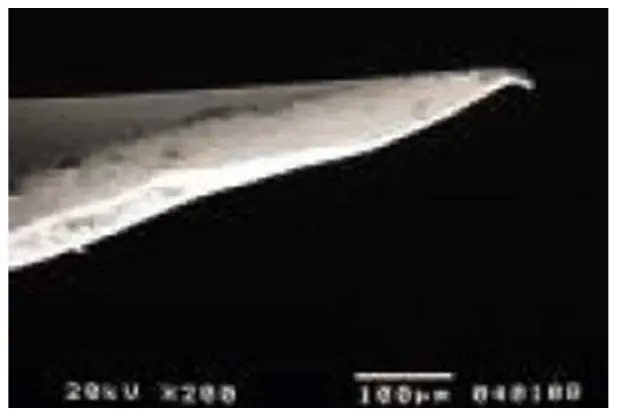
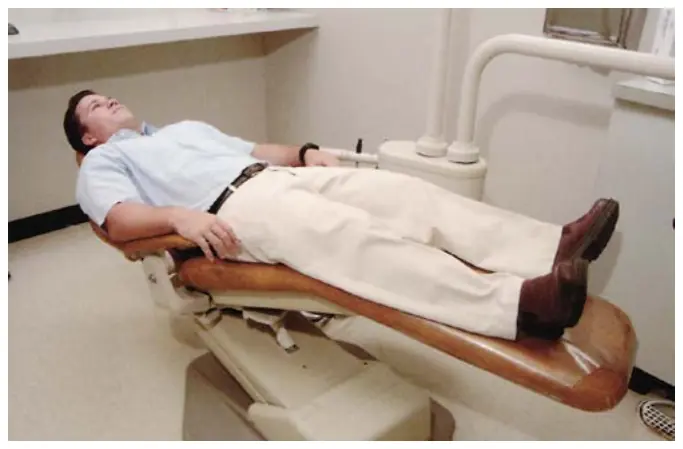

نسخه استخراجشده؛ ترجمه یا تأیید علمی انجام نشده است. وضعیت: captured
مردی ۴۰ ساله برای درمان دو کوادرانت آمده است. پس از چهارمین ورود با همان سوزن، از سوزش ورود سوزن و کوفتگی لثه شکایت میکند. کارپول بعدی را هم دستیار تازه از یخچال آورده است. پیش از تزریق بعدی چه چیزهایی را عوض میکنی؟

سنکوپ وازوواگال (غش ساده) شایعترین اورژانس مطب دندانپزشکی است و بیشترش پیش، حین یا کمی پس از تزریق رخ میدهد. بیش از نیمی از اورژانسهای مطب حین تزریق یا در ۵ دقیقهی پس از آن پیش میآید، و بیشترشان از استرس تزریق است، نه از خود دارو.

هنگام تزریق بیمار را خوابیده به پشت با پاهای کمی بالا قرار بده؛ سر و قلب موازی زمین. همهی بلاکهای ناحیهای در این وضعیت شدنیاند. وضعیت را میتوانی با وضع پزشکی بیمار تنظیم کنی.
اشتباه رایج: تزریق به بیمار مضطرب در حالت نشسته و صاف، به این امید که «زود تمام میشود». بیمار مضطرب نشسته، آمادهترین بیمار برای غش است.